Jooniste teema on väga suur, seega jätkame - vaatame ggplot2 paketiga jooniste peenhäälestamist. Muudame jooniste skaalasid (diskreetsed, pidevad), kuidas värvides väärtusi näidata ja paneme paika õiged sildid. Lõpuks vaatame kuidas paljusid seadistusi teha mõne lihtsa käsuga.
Kui ggplot2-ga koostada joonis, siis muutujad seostatakse graafiliste elementide omadustega (asukoht x-teljel, asukoht y-teljel, värvus, suurus jne). Vaikimisi kasutatakse küllalt mõistlikke skaalasid, nt värviskaalad on valitud selliselt, et kõik värvid oleks võrdse intensiivsusega. Mõnikord on aga soov skaalasid muuta. Selleks saab kasutada käske scale_<graafilise elemendi omadus>_<skaala nimi>. Näiteks scale_x_continuous(.) käsuga saab muuta x-telje vahemikku, scale_colour_grey(.) muudab värviskaala mustvalgeks.
Kõiki skaalade muutmise funktsioone on võimalik näha ggplot2 kodulehel jaotuse “Scales” all.
Skaleerimisfunktsiooni rakendamiseks tuleb see lisada joonisele:
p2 <- ggplot(mk, aes(per_capita_inc, unemployment_rate, colour = State)) + geom_point()
p2 + scale_x_continuous(trans = "log10", breaks = c(1/2, 1:4) * 10^4)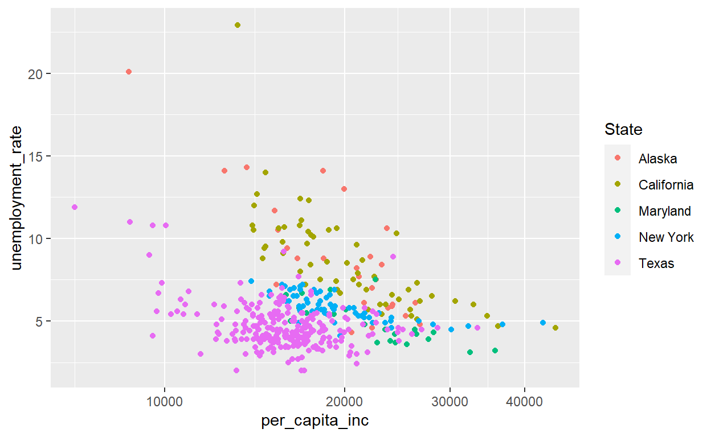
Eelneva käsuga lisati x-telje skaala muudatus: telg kuvatakse logaritmilisel skaalal, breaks määrab teljel esitatavad arvväärtused.
Iga erineva omaduse skaala muutmiseks saab joonisele “juurde liita” uue funktsiooni. Konkreetse funktsiooni parameetrid sõltuvad omaduse tüübist (nt punkti kuju ei saa logaritmida), aga kõigil skaleerimisfunktsioonidel on kindlasti kolm argumenti:
name – telgede puhul telje nimi; värvide, kuju jm legendis antava info puhul vastava legendi pealkiribreaks – vektor väärtustega, mis määravad, millised väärtused joonisel ära markeeritakse (nt x-telje jaotis)labels – parameetriga breaks määratud punktidele vastavad sildidx-ja y-telgi ja teisi skaalasid (mh nende nimesid) saab muuta vastava scale-käsuga, ent on veel võimalusi lisada telgedele/skaaladele nimed ja piiritleda väärtusvahemikku:
xlab(.), ylab(.) – vastavate telgede pealkirjadlabs(.) – saab määrata nii telgede, legendi elementide ka kui graafiku pealkirja (x = "...", y = "...", color = "...", , title = "...")xlim(.), ylim(.) – argumendiks kaks väärtust, mis määravad telgede väärtusvahemiku. NB! objektid, mille väärtused on väljaspool määratud vahemikku asendatakse NA väärtusega ja jäetakse välja kõigilt kihtidelt.lims(.) – üldine skaalapiiride määramise käsk, lisaks x- ja y-telgedele saab piire määrata ka näiteks värviskaalale. Kui värviskaala on seotud osariigi nimega, siis määramaks värvi ainult kahele osariigile tuleks käsk kirja panna kujul: lims(color = c("Alaska", "Texas")).coord_cartesian(.) – argumentidega xlim, ylim saab määrata xy-teljestikus väärtusvahemikud, mis nähtavale jäävad. See on võimalus joonise mingile piirkonnale ‘suumida’. Joonisest lõike tegemine.ggtitle(.) – joonise pealkiri.Teljepiiride määramine ylim(.) või xlim(.) käsuga võib mõjutada joonisel esitatavaid arvutuslikke tulemusi. Näiteks kui joonisel esitada keskväärtused koos usalduspiiridega ning määrata teljepiirid nii, et mõni arvutuse aluseks olev vaatlus jääb piiridest välja, siis muutuvad ka usalduspiirid. Näide sellisest olukorrast on järgmisel joonisel (siin on kasutuses on teine näiteandmestik: rottide kehakaalu ja dieetide andmestik)
rotid <- nlme::BodyWeight
rotid <- rotid[rotid$Diet != 1, ]
p <- ggplot(rotid, aes(factor(Time), weight)) + geom_point(color = "gray") +
stat_summary(geom = "errorbar", fun.data = mean_se, fun.args = list(mult = 1.96)) +
stat_summary(geom = "point", fun = mean)
p
p + ylim(390, 600)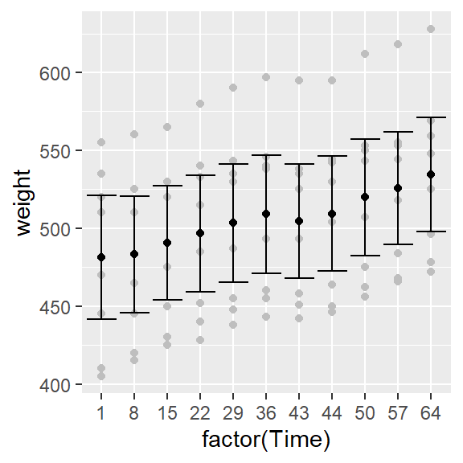 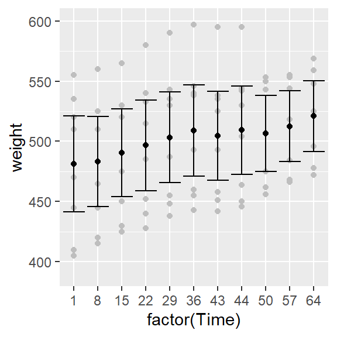
## Warning: Removed 3 rows containing non-finite values (stat_summary).
## Warning: Removed 3 rows containing non-finite values (stat_summary).## Warning: Removed 3 rows containing missing values (geom_point).Kuna kolm vaatlust andmetes on üle 600, siis määratud piir ylim(390, 600) jätab need välja kõigilt kihtidelt. Väljundisse tuleb kolm hoiatust, üks hoiatus iga lisatava kihi kohta (hajuvusdiagramm, usalduspiirid ja keskväärtus punktina kiht).
Pidevate skaalade muutmise käskudel (nt scale_<?>_continuous, scale_<?>_gradient) on mõned spetsiifilised argumendid:
trans – skaala transformeerimise funktsiooni nimi, nt “exp”, “log”, “log10”, “sqrt”.limits – kahe-elemendiline vektor, mis annab skaala algus- ja lõpp-punkti. Sarnalset xlim(.), ylim(.) käskudega tuleb selle argumendi kasutamisel olla tähelepanelik, sest andmed, mis vastavast vahemikust välja jäävad asendatakse NA väärtustega. Selle toimingu mõju sõltub muudetavast skaalast: x-ja y-telgede piiride määramisel tähendab see, et neid andmeridu ei kasutata joonise tegemisel (nt ka regressioonisirge arvutamisel). Värviskaala korral määrab see objektid, millele värvi ei määrata(vt alapunkt “Värviskaala muutmine”).Arumendi trans kasutamise näide on toodud praktimijuhendi alguses: x-telje skaala on sellel joonisel logaritmiline.
Argumendi limits mõju võrrelduna graafikult lõike tegemisega (coord_cartesian) vaata järgmistel joonistel regressioonsirgeid võrreldes.
p2 + geom_smooth(method = lm) + scale_x_continuous(limits = 1:2*10^4) +
labs(title = "x-teljel kasutame ja näeme\npunkte vahemikus 10000-20000")
p2 + geom_smooth(method = lm) + coord_cartesian(xlim = 1:2*10^4) +
labs(title = "kasutame kõiki punkte, tulemust\nnäeme vahemikus 10000-20000")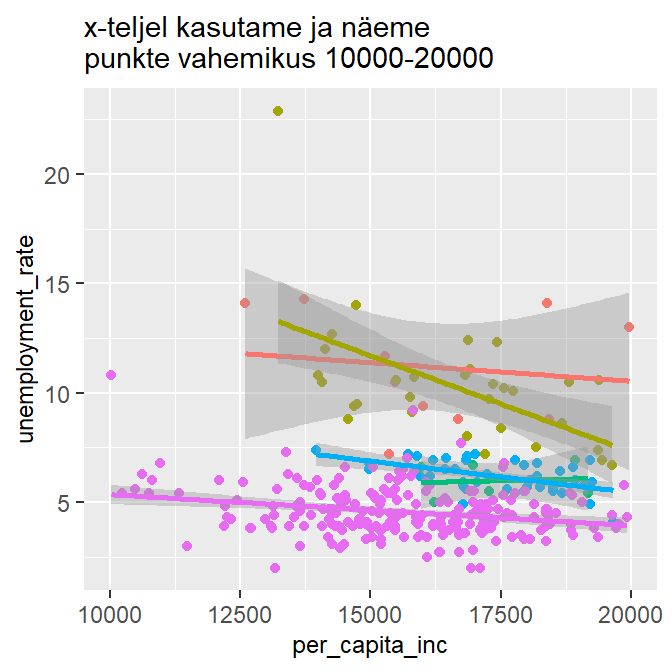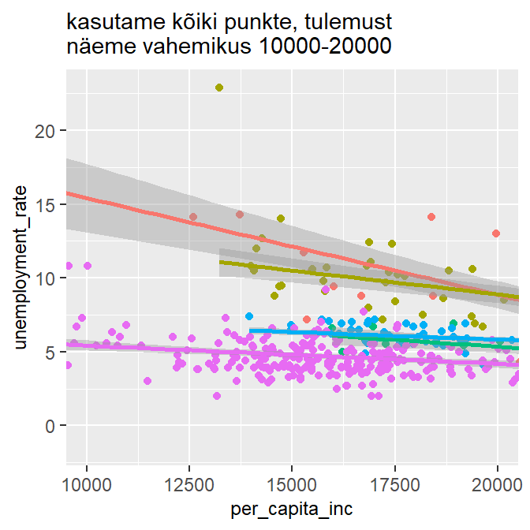
Diskreetsetel skaaladel töötab argument limits teistmoodi: nimelt saab sellega ette anda konkreetsed väärtused, mida joonisel kujutatakse, ülejäänud väärtusi siis joonisel ei kujutata. Oluline on ka väärtuste etteandmise järjekord:
b <- ggplot(data = mk, aes(State, unemployment_rate)) + geom_boxplot()
b + scale_x_discrete(limits = c("Texas", "Maryland", "Alaska"))
#Võrdle, mis mõju on argumendil `breaks`:
# b + scale_x_discrete(breaks = c("Texas", "Maryland", "Alaska")) 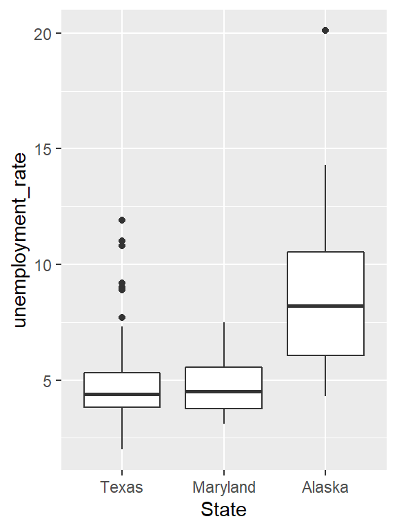
Kui joonise värvid on määratud diskreetsel skaalal, siis limits argumendiga saab määrata millisete väärtusklasside elemendid värvitakse ja millised jäetakse värvimata (vaikimisi jäävad halliks):
b1 <- ggplot(data = mk, aes(bachelor, unemployment_rate, color = State)) + geom_point()
b1 + scale_color_discrete(limits = c("Texas", "Maryland", "Alaska"))
# NA väärtuse värvi saa ka muuta
b1 + scale_color_discrete(limits = c("Texas", "Maryland", "Alaska"), na.value = "white")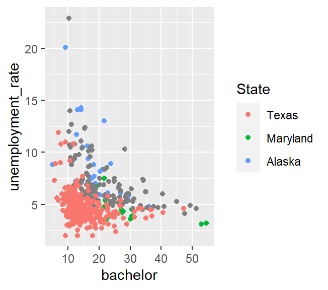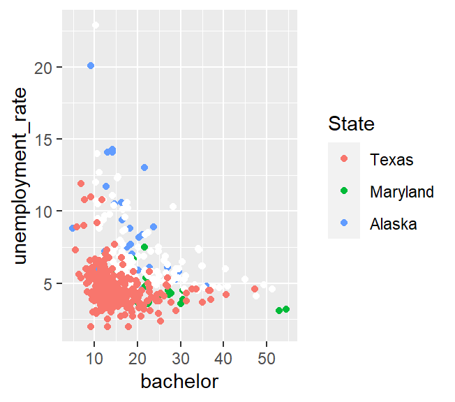
Eelnevalt on tehtud hajuvusdiagramm USA maakondade andmestiku põhjal, et iseloomustada kõrgharidusega ja keskkooliharidusega inimeste osakaalu seost:
joonis <- ggplot(data = mk, aes(x = high_scl, y = bachelor)) + geom_point()
joonisper_capita_inc järgi. Määra legendil tunnuse nimeks Per capita income(kasuta käsku scale_color_continuous(.) või labs(.)).per_capita_inc väärtused viide vahemikku nii, et igas vahemikus oleks üks viiendik vaatlustest. Pane uuele tunnusele nimi income_class ja sildista tekkinud väärtusklassid “Very low”, “Low”, “Medium”, “High”, “Very high”.income_class nii, et värvitaks ainult punkte, kus sissetulek on kas väga kõrge või väga madal (scale_color_discrete(.)).scale_color_discrete(.) käsule lisada argument guide = FALSE.Värvide valik joonisel on väga oluline. Õigesti valitud värvidega on võimalik tuua selgemini välja oma sõnumit, muuta joonist loetavamaks ja meeldivamaks. Asjakohane värvus sõltub tunnusest, mida soovitakse kujutada. Üldiselt võib värviskaalad jaotada kolmeks:
Gradientskaalat saab kontrollida käsuga scale_<?>_gradient(.) (küsimärgi asemel on tavaliselt fill või colour). Saab kasutada kõiki pideva tunnuse skaala muutmise argumente, ning lisaks on kaks argumenti: low ja high ekstreemsete väärtuste värvi määramiseks gradiendil. Lahknevat gradienti saab kontrollida funktsiooniga scale_<?>_gradient2(.), millel on lisaks low ja high väärtustele argument mid millega saab ette värvi nime, mis vastab nullpunktile, vaikimisi on see värv valge. Skaala nullpunkti väärtuse saab ka ise ette anda. Lahknevat ja veel keerulisemaid gradiente saab määrata funktsiooniga scale_<?>_gradientn, mille argumendile colours saab ette anda vektori värvidega, mille vahele siis uued värvid sujuva üleminekuga valitakse.
Näited kahe gradientskaala käsu kasutamisest:
p3 <- ggplot(data = mk, aes(per_capita_inc, unemployment_rate)) +
geom_point(aes(colour = bachelor ))nimi = "% w/ higher \n education"
p3 + scale_colour_gradient(name = nimi, low = "yellow", high = "red")
p3 + scale_colour_gradient2(name = nimi, low = "blue", high = "red", midpoint = 30)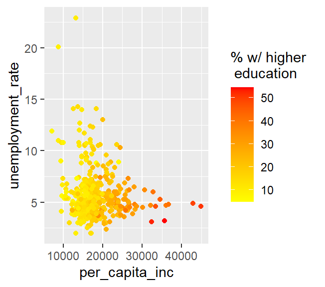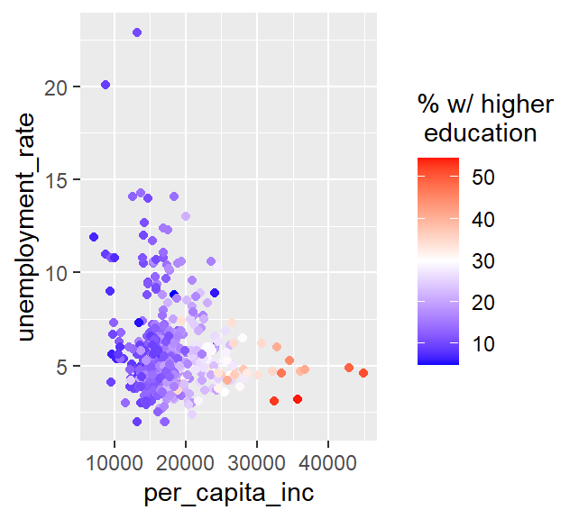
Diskreetsete/kvalitatiivsete värviskaalade kontrollimiseks kasutatakse vaikimisi funktisooni scale_<?>_hue(.), mis valib HCL värviskaalal1 parameetri h (hue värvitoon) väärtused võimalikult erinevad, jättes värvi tugevuse c (chroma) ja heleduse l(luminance, lightness) konstantseks. Nii saadakse võimalikult erinevad värvid, mis samal ajal on ühesuguse intensiivsusega.
p4 <- ggplot(mk, aes(per_capita_inc, unemployment_rate)) + geom_point(aes(colour = State ))
p4
p4 + scale_colour_hue(c = 150) # tugevus suuremaks, vaikimisi 100
#p4 + scale_colour_hue(l = 20) # heledus madalamaks, vaikimisi 65
#p4 + scale_colour_hue(h = c(10, 190)) # kaks värvitooni, skaala algus- ja lõpptoon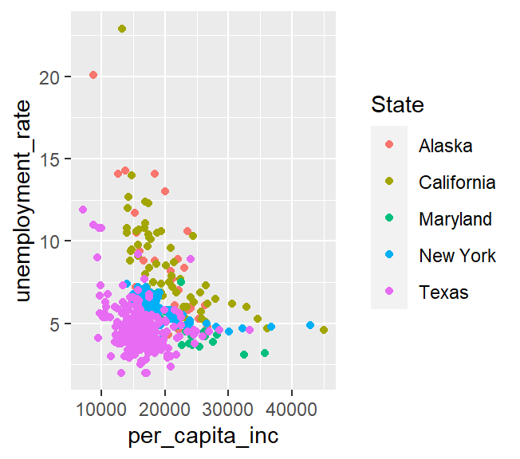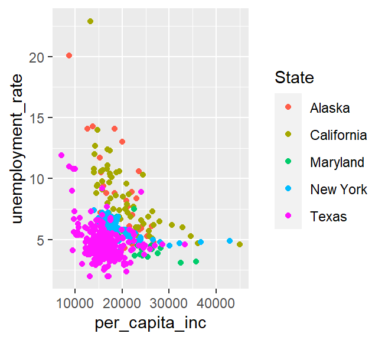
Diskreetsete värviskaalade jaoks on arendatud värvipalett Colorbrewer (algselt arendatud maakaartide värvimiseks). ggplot2-s pääseb sellele paletile ligi funktsiooniga scale_<?>_brewer(.), millel on kaks argumenti:
type – võimalikud väärtused on "seq", "div" ja "qual"palette – paleti number (vt http://www.colorbrewer2.org)p4 + scale_colour_brewer(type = "div", palette = 2)
p4 + scale_colour_brewer(type = "qual", palette = 2) 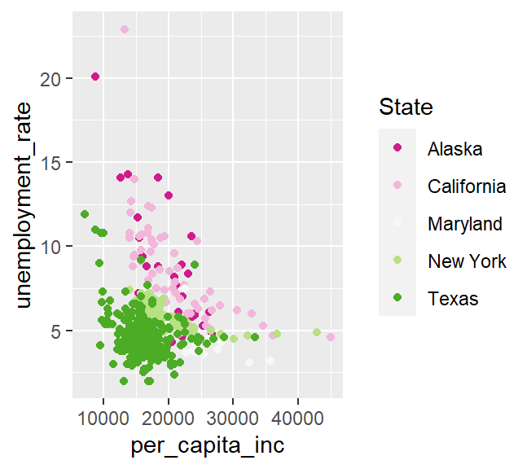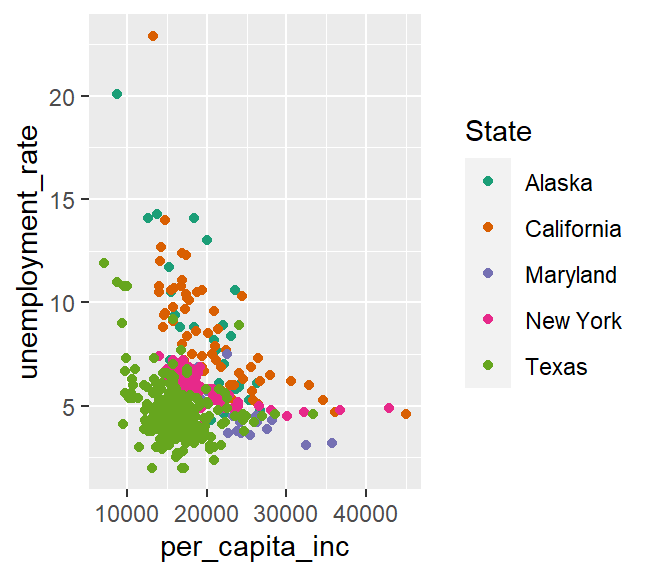
high_scl ja bachelor) valida tunnuse income_class jaoks selline värviskaala, mis http://www.colorbrewer2.org väitel on ka värvipimedatele loetav.Vaikimisi joonistab ggplot2 halli taustaga jooniseid – et heledamad värvid oleksid sama silmatorkavad kui tumedad. Kui on soov valge tausta järele, siis seda saab tellida, lisades joonisele käsu + theme_bw(). Veelgi detailsemalt saab joonise kujundust käsuga + theme(.), mille argumentidest mõned olulisemad on:
| Argument | Elemendi tüüp | Selgitus |
|---|---|---|
| line | line | kõik jooned |
| rect | rect | kõik ristkülikulised elemendid (taustad, raamid) |
| text | text | kõik tekstid |
| axis.line | line | joonise teljed |
| axis.text.x | text | x-telje väärtused |
| axis.text.y | text | y-telje väärtused |
| axis.ticks | line | joonise jaotised |
| axis.title.x | text | x-telje pealkiri |
| axis.title.y | text | y-telje pealkiri |
| legend.background | rect | legendi taust |
| legend.key | rect | legendi võtme taust |
| legend.text | text | legendi tekst |
| legend.title | text | legendi pealkiri |
| panel.background | rect | graafiku taust |
| panel.border | rect | graafikut ümbritsev raam |
| panel.grid.major | line | jaotise jooned |
| panel.grid.minor | line | jaotise jooned |
| plot.background | rect | kogu joonise taust |
| plot.title | text | joonise pealkiri |
| strip.background | rect | tahkude pealkirjade taust |
| strip.text.x | text | horisontaalsete tahkude pealkiri |
| strip.text.y | text | vertikaalsete tahkude pealkiri |
Täielikum loetelu theme(.) võimalikest argumentidest on aadressil http://ggplot2.tidyverse.org/reference/#section-themes .
Nagu näha, on kolm peamist elemenditüüpi, mida saab muuta käskudega element_text(.), element_line(.) ja element_rect(.). Nendel käskudel on omakorda argumendid:
element_text(.) – family, size, colour, angle, hjust, vjust kontrollivad teksti šrifti, suurust, värvi, kaldenurka ja positsiooni vaikimisi määratud koha suhtes. Näiteks size=14 valib teksti punktisuuruseks 14pt.element_line(.) – colour, size, linetype;element_rect(.) – colour, size, linetype ääre muutmiseks, fill sisemuse värvi muutmiseksKui mõnda elementi üldse joonisel ei soovi näha, siis tuleb vastavale argumendile anda väärtus element_blank().
high_scl ja bachelor hajuvusdiagramm tunnuse income_class järgi värvitud)